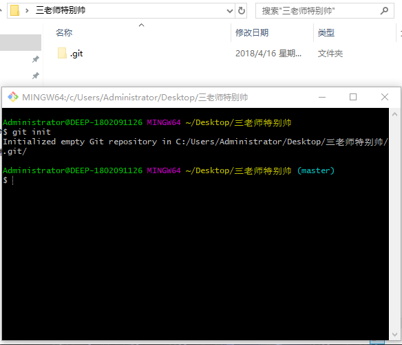
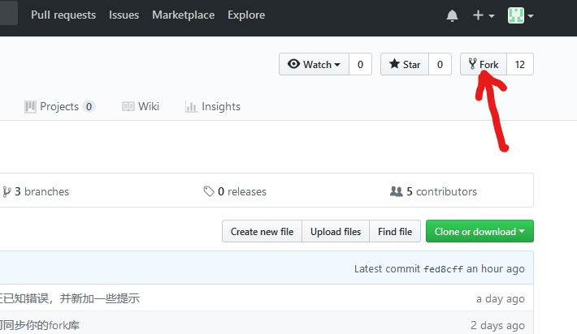
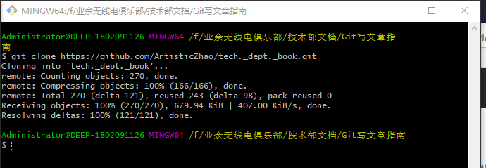
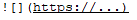
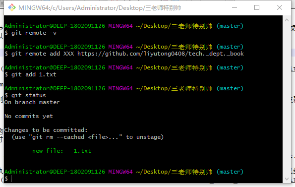
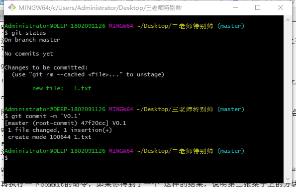
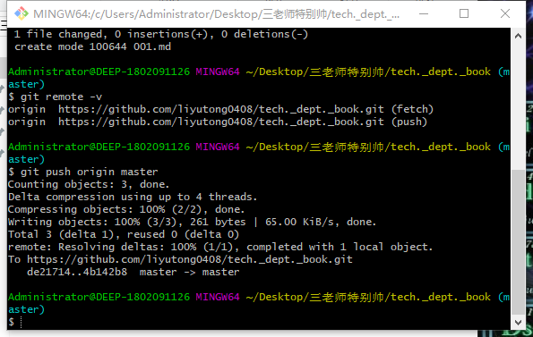

Git写文章指南
主讲：BG2DGR
归档人：HITLYT
这个文章是什么情况
听说好多大佬和萌新在听完三老师的课之后表示：“我今天收获挺多的，就是没学会怎么用Git写文章然后上传到云端……”于是乎，本文就来继续科普一下如何用Git来写文章。在进行下一步之前请先确认你的电脑上已经弄好了有关Git和Github的一大堆事情（手动滑稽）
第一步————fork&clone
首先去找一个比较舒服的地方，新建一个文件夹并取一个比较好听一点的名字（比如：三老师真帅）然后Git bash here（好多右键里面有），在弹出的窗口输入
git init
这个命令将创建一个名为 .git 的子目录（隐藏文件夹），据说这些文件是 Git 仓库的骨干。

当然，我们不建议这样做，因为这样会在上传的过程中出现一些问题。我们推荐在文件夹里把现有的库clone下来。 在浏览器中登陆自己的github，然后找到三老师（网址https://github.com/artisticzhao ），进入tech._dept._book，然后点击右上角的fork。

在fork成功之后回到自己的GitHub上点击“clone or download”，点击网址旁边的按钮来复制网址。
之后到git的界面，输入
git clone https://...（右键粘贴刚才复制的网址）
如果得到这样的结果，说明已经clone成功。

第二步————写文章
在你已经建好的文件夹里面新建一个 .md的文件。然后就可以在里面写你想写的东西了。
至于怎么写嘛。。。悄悄地告诉你们一个秘密：其实这篇文章是用从三老师那clone的文件改出来的（手动滑稽）
正经一点，markdown语言如果不会的话可以去请教一下大佬们，或者可以去问问度娘，这里就不详细说了。
关于图片插入的问题：
如果用notepad来编辑的话一般格式为 其中关于图片的地址：可以先将图片整理好后跳过插入图片的步骤，然后通过在自己的GitHub上找到该图片右键查看图片地址来获得。
第三步————上传到自己的GitHub
写好之后当然就是上传啊！上传分三个步骤：add commit push
add：
在Git里面输入
git add 三老师特别帅.md
如果需要add全部的更改的文件可以用
git add . 或者 git add *
这步是把需要上传的文件添加到暂存区。相当于把第一张桌子上做好的方块放到第二张桌子上。 可以用下面的命令来查看库的状态：
git status

commit:
刚刚我们已经把 三老师特别帅.md 放到了暂存区，不过处在暂存区的文件随时可能会被覆盖。我们需要把它放到版本库里，输入
git commit -m 'v0.1' （引号里的东西只是一个标记）
电脑可能会问你 Please tell me who you are. 这时我们需要设置一下我们的email和用户名，分别输入命令
git config user.email "（这里填你注册Github时候用的邮箱）"
和
git config user.name "（这里填你注册Github时的用户名）"
再执行一下commit的命令，如果你得到了一个 这样的结果，说明第二张桌子上的方块已经被整理好并保存起。

此处链接一些三老师的文章，里面有详细的讲解。
push:
在之前的步骤里我们已经把文件保存到我们的版本库里面。但是如果某天索导给了三老师和张雪洁一个项目，让他们分工完成。然后就会发现一个问题，三老师和张雪洁都把自己的文件保存到了自己的电脑上。如果三老师想用一下张雪洁的某个文件，就只能用U盘去copy，这样一来就会变得灰常麻烦。于是乎，我们需要一个叫远程仓库的东西，让三老师和张雪洁把文件都上传到远程仓库中去，当仓库中的文件有改动的时候更新一下就好了。这时就需要用到push了。
在进行push之前，我们要先看一下自己有没有远程库。输入
git remote -v
如果你有远程库，就会显示出远程库的详细信息（一般clone下来的文件夹都会有远程库）。如果是 git init 的话是没有远程库的，输入这个命令之后什么都不会显示，这时需要添加一下远程库。 输入命令
git remote add XXX（这里起一个好记的英文名字） https://github.com/XXX001/XXX.git （指向你需要的远程仓库）
这样我们就添加了一个叫XXX的远程仓库。git会把默认的一个远程仓库起名为origin，很多时候会比较混乱，这时可以用 git remote rename 或者 git remote remove 更改远程库的名字或者将其删除。 然后我们就可以输入
git push XXX develop
把本地合并好的分支推到远程仓库上。 在默认的情况下也可以输入 git origin master 推上去。
敲黑板！！！这里你的远程库的地址必须是自己的远程库地址，不知道的话可以到自己的GitHub上点clone复制地址（咱们的地址一般格式为https://github.com/（你的用户名）/tech._dept._book.git）

最后一步————提交给三老师
最后一步就是去自己的GitHub上提交 merge request （此步骤请参考三老师的文章），然后就可以静静地等待三老师的审核啦！（开心~~）
------The End
版权声明：
文章均由哈尔滨工业大学业余无线电俱乐部，技术部原创，转载请联系BY2HIT技术部 zhaoyuhao@by2hit.net